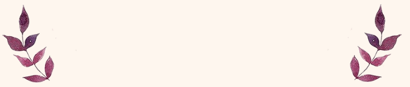
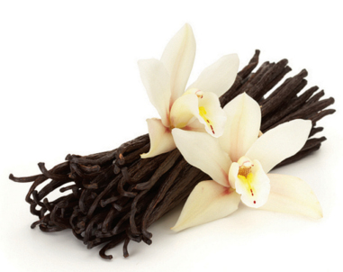

PHYSICAL PROPERTIES
1. Physical Description
- - DryPowder
- - Liquid
- - Pellets Large Crystals

2. Color
- - White or very slightly yellow needles.
- - White or off-white nonhygroscopic crystalline powder.
3. Odor
- - Sweetish Smell.
- - Pleasant aromatic vanilla odor.
4. Taste
Pleasant vanilla taste.
5. Chemical Formula
C8H8O3
6. Molar Mass
152.15 g/mol
7. Boiling Point
545° F or 285°C at 760 mm Hg
8. Melting Point
178 to 181° F or 81-83°C
9. Solubility
- Solubility in water
- 1 gram of vanillin dissolves in 116 ml of water at 80°C 11 grams of vanillin dissolve in 1 L of water at 25°C
- Solubility in other solvents
- Vanillin is very soluble in hot benzene, and petroleum ether and soluble in diethyl ether, acetone and. Vanillin is freely soluble in chloroform, carbon disulfide, glacial acetic acid, pyridine, oils, and in aqueous solutions of akali hydroxides.
10. Density
1.06 g/cm³
11. Stability
Slowly oxidizes somewhat on exposure to moist air; affected by light
Chemical Properties
Vanillin can react violently with Br2, HClO4, potassium-tert-burtoxide, tert-benzene + NaOH, Vanillin is an aldehyde, aldehydes are readily oxidized to give carboxylic acids. This molecule slowly oxidizes on exposure to air and is slightly water soluble. Vanillin is incompatible with Perchloric acid and is moisture and light sensitive